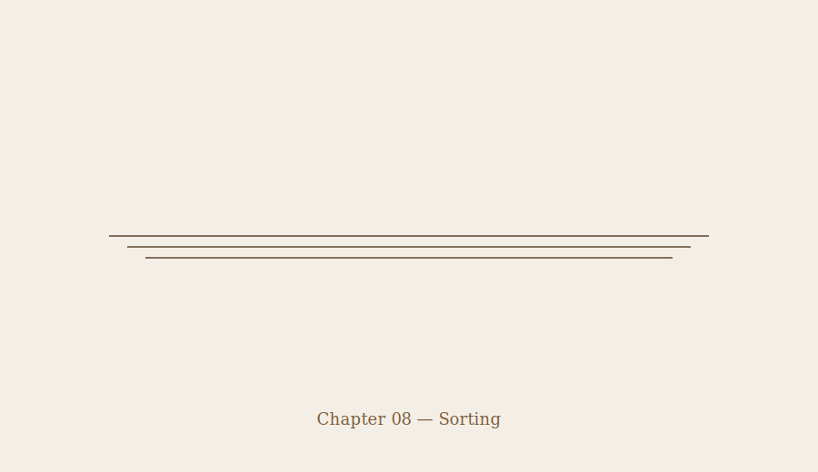

Chapter 08 — Sorting
The Civic Center didn’t feel like safety.
It felt like sorting.
Cars were double-parked. Guards were shouting directions that kept changing. People were gripping phones that didn’t work.
One rule was said out loud once:
Names had to be added before check-in finished. Once wristbands went on, the list locked.
No changes after that.
Most people nodded.
Most people didn’t really hear it.